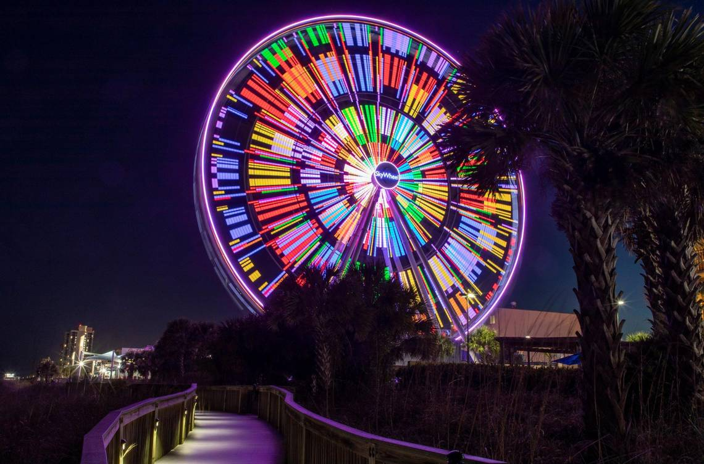
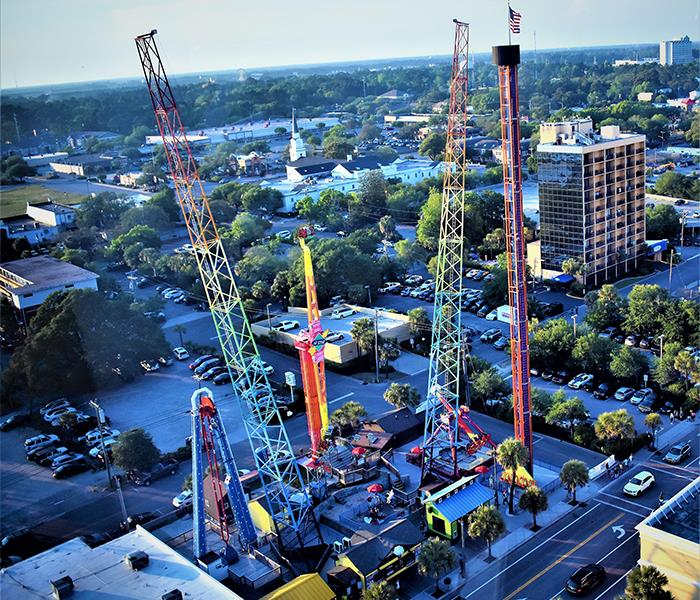
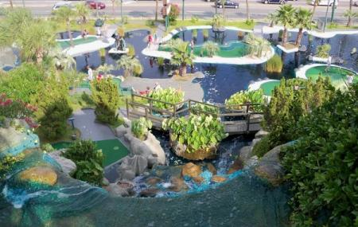

The SkyWheel - Observation and Light Show
 Take a tall and relaxing ride on the one and only SkyWheel. Take in the amazing view of the ocean, shores and in-land horizon. At night, the wheel will light up with amazing colors and patterns to leave you in awe for the rest of the night.
Free Fall Thrill Park - High-Speed Attractions
Free Fall Thrill park has been a mainstay in the attractions presented at myrtle beach. It's nearly impossible to image the beach without it. It is located near another attraction, called the SkyWheel. Rides in this minature amusement park include The Sling Shot, Air Strike, Sun Dance, and the Screaming Swing. The area also includes a soft-serve icecream stand for you to cool of after your time on the rides. Truly an excellent place to get the adrenaline flowing if you need some excitement.
Mt. Atlanticus - Miniature Golf
Mini golf is an excellent way to relieve all your stresses on a tiny, colored ball. Mt. Atlanticus will surely bring you that friendly competition and fun with our 36 holes for everyone to enjoy. There are plenty of rest areas on your way through the course, providing shade and a cooling breeze to help you relax while you're having fun.